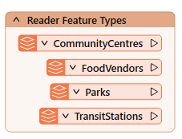
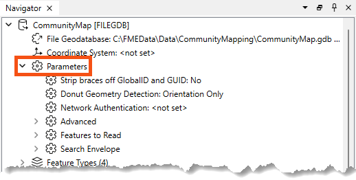
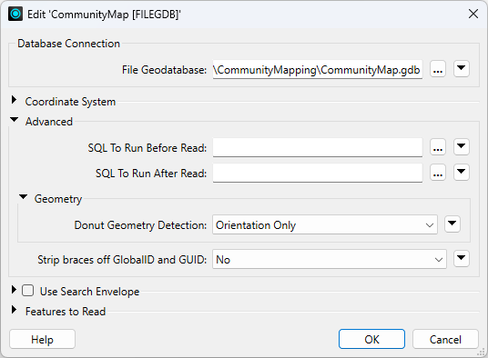
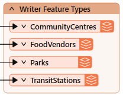
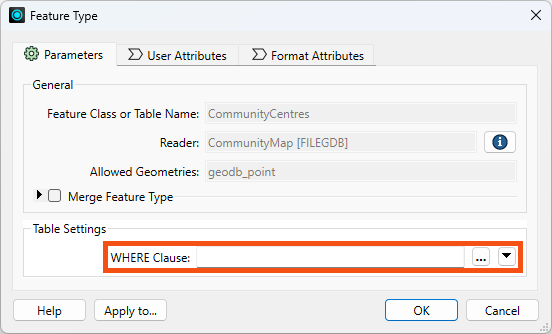

After completing this lesson, you’ll be able to:
As we know, a workspace contains a reader to read a dataset, and each feature type in that dataset is shown in the workspace canvas:

To control how that reader operates requires the use of reader parameters.
You can find reader parameters by clicking Parameters in the Generate Workspace or Add Reader dialogs:
They can also be found in the Navigator window in Workbench:

Because parameters refer to specific components and characteristics of the related format, readers of different formats have different control parameters.
Double-click on any parameters to edit a parameter in the Navigator window. Doing so opens up a dialog where the parameter’s value may be set:

Reader parameters control all feature types in the dataset. Think of it like brewing a pot of coffee. The strength control on the coffee machine affects all the cups poured.
Because some reader parameters affect how feature types are generated (e.g., how do you want to slice a JSON or XML file?), they can only be set when you add the reader. If you set them incorrectly or want to change them, you have to delete the reader and add it again.
This behavior does not exist in writer parameters.
Like readers, we know a workspace contains a writer to write a dataset, and each feature type to be written is shown in the workspace canvas:

To control how that writer operates requires the use of writer parameters.
Writer parameters can be located - and set - by clicking Parameters when a new workspace is being generated:

They can also be found in the Navigator window in Workbench:

Finally, there is a button that appears when you select feature types that can take you directly to the reader/writer parameters:

Because parameters refer to specific components and characteristics of the related format, writers of different formats have different control parameters.
Double-click on any parameters to edit a parameter in the Navigator window. Doing so opens up a dialog where the parameter’s value may be set:

Like readers, writer parameters control all feature types in the dataset. In the above screenshot, all feature types are version 3.1.1.
However, each reader and writer feature type has settings, just as each cup of coffee can be adjusted with cream and sugar. You can learn more in the documentation.
Feature types also have parameters controlling how FME reads or writes a table, layer, or other data group.
You can view and edit these parameters by double-clicking a feature type to open the Feature Type dialog:

You can also find them in the Navigator under the reader or writer > Feature Types > feature type name > Parameters:

Like reader and writer parameters, the options available here vary by format.
For example, with the Esri File Geodatabase Open API reader, reader feature types have a single parameter: a WHERE Clause that can be used to restrict data on reading:

Some formats do not have any parameters, such as GML writer feature types:

It's worth exploring the options available to you based on format. There are some very powerful feature type parameters. For example:
One important consideration in overall workspace design is cross-OS compatibility. Generally, FME is designed so your workspaces will run on any of our supported operating systems. However, there are a few best practices to keep in mind that could save you from problems in the future. These include:
\/:*?"<>|, null, and / in your file and folder names. For more advice, see this thread.myObject and myobject, while others reject these fields as duplicate violations. Assuming case insensitivity is the safest method.